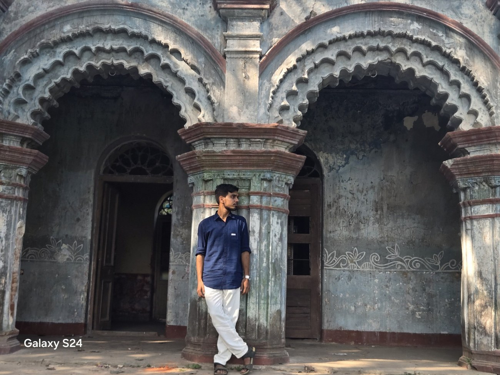

01⌘
Programming
C · Python · JavaScript
CPythonJavaScript
COMPUTER SCIENCE & ENGINEERING
Hello, I'm
A Developer
I enjoy turning ideas into thoughtful digital experiences through code, clean design and continuous learning.
A LITTLE INTRODUCTION
A quick look at the person behind the code.

I'm Priyojit Chowdhury, a Computer Science and Engineering student at Government College of Engineering and Leather Technology, Kolkata.
I'm interested in web development, software engineering, databases and emerging technologies. I like understanding how things work, experimenting with ideas and improving through hands-on projects.
MY TOOLKIT
A growing toolkit — skills are listed honestly, not as proficiency ratings.
C · Python · JavaScript
Structure, styling and interfaces
Server-side fundamentals
Data, version control and workflow
Digital artwork, visual design and media editing
SELECTED WORK
Project concepts and work in progress. Repository and demo links will be added after each project is built and tested.
A responsive personal website with a consistent design system, motion effects and project highlights.
A proposed assistant to examine suspicious URLs and messages and explain possible warning signs.
A cricket tournament database concept for teams, player profiles, fixtures and match statistics.
Only the portfolio site is currently marked as in progress. Planned concepts are not presented as completed applications.
THE ROAD SO FAR
Education and the direction I'm working towards.
2023 · ENTRANCE EXAMINATION
Secured GMR Rank 10,335 and SC Category Rank 674.
Admission pathway to engineering2021 · HIGHER SECONDARY
Bolpur N.N.B. High School, Bolpur, West Bengal.
Score: 78.6%2019 · MADHYAMIK
Bolpur High School, Bolpur, West Bengal.
Score: 66.86%UNDERGRADUATE · ONGOING
Government College of Engineering and Leather Technology (GCELT), Kolkata.
Currently studying · 4th Year · 7th SemesterCONTINUOUS LEARNING
Strengthening programming, web development, databases and software fundamentals with practical work.
OngoingHAVE A PROJECT IN MIND?
I'm open to conversations about technology, collaboration and new opportunities.
Send a message directly from this form. EmailJS setup is required before publishing; see EMAILJS-SETUP.md.